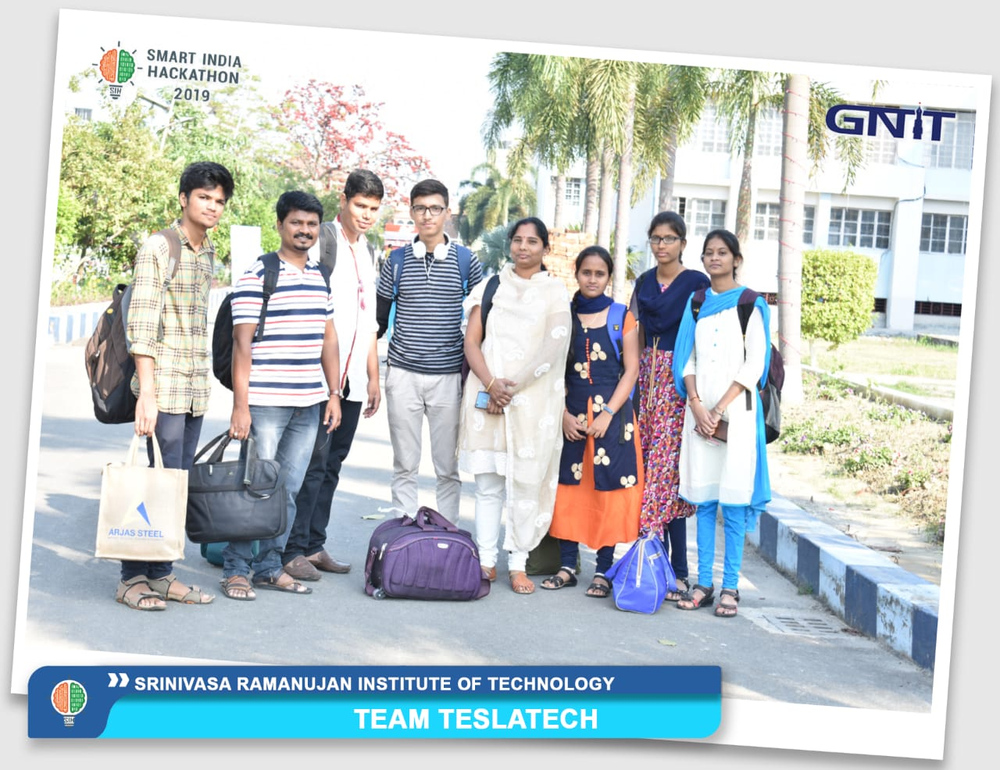

Manish Ranjan
A Computer Science & Engineering student at SRIT.

Manish Ranjan, fourth from the left, with his team members and faculty at the Guru Nanak Institute of Technology, Kolkata for the Grand Finale of SIH,2019.
Here is Some Info of Manish Ranjan :
- 1999 : Manish was born in Darbhanga, Bihar.
- 2000 : Initially named "Abhinav", he was given the name "Manish Ranjan" by his beloved grandfather.
- 2004 : Manish began his schooling at The Air Force School, Darbhanga.
- 2010 : Manish moved on to Andhra Pradesh.
- 2010 : Manish started continuing his schooling at Aditya Birla Public School.
- 2014 : Manish visited IIT Bombay for a workshop.This is the place where his love for studying in an IIT began.
- 2015 : Manish won the district level Science Fair scholarship.
- 2016 : Manish graduates out of High School and starts preparing for IIT.
- 2018 : The dream got shattered when he could not clear the exam.
- 2018 : With a new optimism, he joined SRIT.
- 2019 : Manish became a Finalist of Smart India Hackathon and attended it in Kolkata but could not make it to the top 3.
- 2019 : Manish became one of the 1299 Microsoft Student Partners around the world for the term 2019-2020.
- 2020 - future : And many more good things to come.
"Believe yourself, there is no bigger strength than this out there."
------ Manish Ranjan
If you are interested to know more about me, please click here.